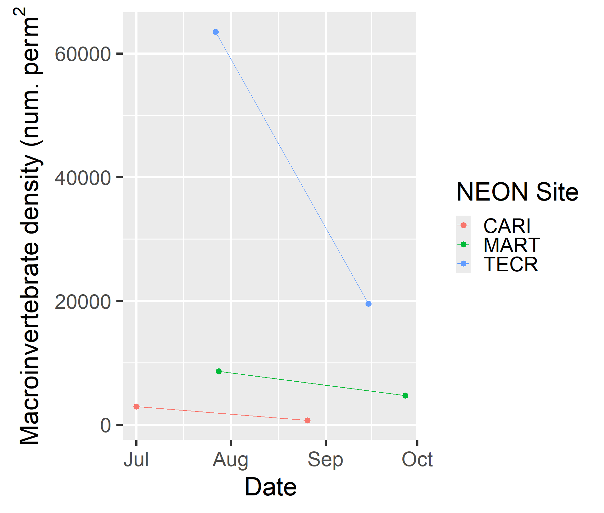

Chapter 8. Controlling program flow
Overview
THIS CHAPTER IS NOT READY FOR LEARNERS
What we will learn
In this lesson we will practice skills from all core lessons to conduct an analysis on NEON data. We will use a reproducible workflow and save our analysis as an RStudio project.
Prerequisites
Before beginning this lesson you should have completed all prior lessons and any prerequisites therein.
Before you begin, set up an RStudio project for an organized and reproducible analysis:
- Open Rstudio and create a new project named NEON_project.
- Inside the NEON_project folder, create a folder named
code. During this lesson you will create two new code scripts inside this folder. - Inside the NEON_project folder, create a folder named
data. During this lesson you will create several derived data sets for your analysis. These derived data tables will be saved in thisdatafolder. - Insider the derived data folder, create a folder named
output. The code from this lesson will generate figures that will save into this folder. - Be sure to click Save often to save your work.
The final output of this lesson is available in the chapter 8 exercises folder of the workbook.
Lesson
In this lesson we will be working on an analysis of macroinvertebrate diversity at three NEON aquatic sites: Caribou Creek, Alaska (CARI), Martha Creek, Washington (MART), and Teakettle Creek, California (TECR). You can see a map of these sites on the NEON website. Our goal is to evaluate which site has the highest summer macroinvertebrate diversity and determine whether macroinvertebrate abundance is related to water temperature over the course of the summer.
Before beginning an analysis, it can be extremely useful to map out the steps ahead of time. This will make it easier to translate the analysis to code.
Let’s list our goals for analyzing macroinvertebrate diversity and what we need to do to accomplish each:
Goal 1: Compare the total number of macroinvertebrate taxa at found at each site.
- Start with the macroinvertebrates data downloaded from NEON.
- Extract two tables from this download:
inv_fieldDatacontains data on when and where the invertebrate samples were collectedinv_taxonomyProcessedcontains taxonomic information about which taxa were collected in each sample
- Use the
inv_taxonomyProcessedtable to count the number of unique taxa found at each site, combining across all of the samples from each site (which were collected at different locations and on two separate sampling dates). - Output a table comparing these values.
Goal 2: Macroinvertebrate abundance vs. temperature
We are also nearly done with the second goal as well. Let’s see how far we can get using functions that we have already learned.
### Goal 2: Plot macroinvertebrate abundance and temperature over time
## Start with macroinvertebrate data tables
## inv_fieldData and inv_taxonomyProcessed (saved as inv_taxa)
## Use surface water temperature data from TSW_30min
# Extract surface water temperature measurements
# averaged over 30 min periods
TSW_30min <- watertemp_list$TSW_30min
# Filter the temperature data to good observations
TSW_30min_good <- filter(TSW_30min, finalQF == 0)
## Use inverts_taxa to calculate the total abundance of
## macroinvertebrates in each sample from each site
inverts_bysample <- inv_taxa |>
group_by(siteID, sampleID) |>
summarize(total = sum(estimatedTotalCount))
## Join inverts_bysample with inv_fieldData to determine the
## dates which each sample was collected and the amount of area sampled.
# Since we don't need all the columns, we can just select the columns
# of interest before joining.
field_cols <- inv_fieldData |>
select(sampleID, collectDate, benthicArea)
# Join the invertebrate abundance with field data columns
# left_join keeps all rows in inverts_bysample
inverts_bysample <- left_join(inverts_bysample, field_cols, by = "sampleID")
## Control for variability in abundance based on the amount
## of area sampled by calculating density = abundance / area`
inverts_bysample <- inverts_bysample |>
mutate(density_per_m2 = total / benthicArea)
## Calculate average macroinvertebrate density across all samples
## collected on the same date at the same site.
# Make a column that extracts the date from collectDate
inverts_bysample <- inverts_bysample |>
mutate(collect_day = date(collectDate))
# Note: we could have combined this step with the last
# step and created two columns with one `mutate()`.
# Summarize the samples by date and site
# calculate average macroinvertebrate density
# calculate number of samples averaged
inverts_bysite <- inverts_bysample |>
group_by(siteID, collect_day) |>
summarize(density_per_m2 = mean(density_per_m2),
n_samples = n())
## Calculate average temperature across both sensors for
## each time point at each site and save this in a new table
TSW_avg <- TSW_30min_good |>
group_by(siteID, startDateTime) |>
summarize(temp_avg_C = mean(surfWaterTempMean),
n_obs = n()) # keep track of the number of measurements averaged
## Graph macroinvertebrate density and temperature over time
## for the four sites.
# Temperature vs. time colored by site
TSW_avg |>
ggplot(aes(x = startDateTime, y = temp_avg_C, color = siteID)) +
geom_line() +
labs(x = "Date",
y = expression("Surface water temperature"~(degree*C)),
color = "NEON Site")
# Macroinvertebrate density vs. time
inverts_bysite |>
ggplot(aes(x = collect_day, y = density_per_m2, color = siteID)) +
geom_point() +
geom_line() +
labs(x = "Date",
y = expression("Macroinvertebrate density (num. per"~m^2),
color = "NEON Site")
The graph in the last step gave us a warning that rows of data were omitted due to missing values. That’s what we wanted to have happen, so we don’t need to try to address this warning.
We are almost done with the analysis- the last two steps require that we match up temperature measurements with the dates when macroinvertebrates were sampled.
Let’s match macroinvertebrate samples in the
inverts_bysite table to an average of temperatures measured
for a three day period before each sample was collected.
First we need to calculate average temperatures over the three-day
periods of time before each collect_day in
inverts_bysite. To do this we will use functions from the
lubridate package to define a set of time intervals that
correspond to each of the collection dates.
# Define 3 day time intervals before each collection date
inverts_bysite$temp_interval <- interval(end = inverts_bysite$collect_day,
start = inverts_bysite$collect_day - ddays(3))
# Examine inverts_bysite
inverts_bysite# A tibble: 6 × 5
# Groups: siteID [3]
siteID collect_day density_per_m2 n_samples temp_interval
<chr> <date> <dbl> <int> <Interval>
1 CARI 2021-07-01 2925. 8 2021-06-28 UTC--2021-07-01 UTC
2 CARI 2021-08-26 701. 8 2021-08-23 UTC--2021-08-26 UTC
3 MART 2021-07-28 8635. 8 2021-07-25 UTC--2021-07-28 UTC
4 MART 2021-09-27 4698. 8 2021-09-24 UTC--2021-09-27 UTC
5 TECR 2021-07-27 63478. 8 2021-07-24 UTC--2021-07-27 UTC
6 TECR 2021-09-15 19571. 8 2021-09-12 UTC--2021-09-15 UTCNext we need to calculate the average temperature at each site within
the three-day time intervals that we defined. This sounds like a good
use for a for loop! We learned about for loops
in Controlling program flow.
Although there are vectorized ways to accomplish this (see the
purrr package), a for loop will work fine
here.
## Join inverts_bysite with temperature data that corresponds to the
## date when samples were collected.
# Define a vector to hold the average temperatures
# There will be one for each row in inverts_bysite
N <- nrow(inverts_bysite)
avg_temp <- rep(NA, N)
# Loop through each row in inverts_bysite
for(i in 1:N){
# Define the time interval and site for this row
this_interval <- inverts_bysite$temp_interval[i]
this_site <- inverts_bysite$siteID[i]
# Get all rows from TWS_avg within the time interval for this row
use_temps <- filter(TSW_avg,
startDateTime %within% this_interval,
siteID == this_site)
# Calculate the average temperature and save it in avg_temp
# remove any missing values
avg_temp[i] <- mean(use_temps$temp_avg_C, na.rm = TRUE)
}
# Add avg_temp as a new column in inverts_bysite
inverts_bysite$temp_avg_3day <- avg_temp
# View the data
inverts_bysite# A tibble: 6 × 6
# Groups: siteID [3]
siteID collect_day density_per_m2 n_samples temp_interval temp_avg_3day
<chr> <date> <dbl> <int> <Interval> <dbl>
1 CARI 2021-07-01 2925. 8 2021-06-28 UTC--2021-07-01 UTC 5.29
2 CARI 2021-08-26 701. 8 2021-08-23 UTC--2021-08-26 UTC 4.13
3 MART 2021-07-28 8635. 8 2021-07-25 UTC--2021-07-28 UTC 15.6
4 MART 2021-09-27 4698. 8 2021-09-24 UTC--2021-09-27 UTC 12.0
5 TECR 2021-07-27 63478. 8 2021-07-24 UTC--2021-07-27 UTC 14.6
6 TECR 2021-09-15 19571. 8 2021-09-12 UTC--2021-09-15 UTC 12.6 Now that we have macroinvertebrate abundance and temperature in the same data frame, we’re ready to move on to the last step.
## Graph macroinvertebrate density versus water temperature as a scatterplot.
## Connect points from the same site with arrows pointing from the
## first to the second sample.
inverts_bysite |>
ggplot(aes(x = temp_avg_3day, y = density_per_m2)) +
geom_point(aes(color = siteID)) +
labs(x = expression("Surface water temperature"~(degree*C)),
y = expression("Macroinvertebrate density (num. per"~m^2),
color = "NEON Site")
Introduction to Computing in R with NEON